₿ BTC 四年周期理论验证研究报告
Bitcoin Four-Year Cycle Theory Verification Research Report
1. 研究概述
1.1 研究目的
本报告基于币安交易所 BTCUSDT 交易对的真实历史数据，对比特币"四年周期理论"进行系统性验证。通过多时间维度（日线、8小时线、周线、月线）的数据分析，结合减半事件、市场结构变化和宏观经济因素，评估该理论的有效性，并对未来走势提出基于数据的预测。
1.2 数据概览
| 指标 | 数值 |
|---|---|
| 数据总天数 | 3,091 天 |
| 日K线数量 | 3,091 条 |
| 8小时K线数量 | 9,269 条 |
| 周K线数量 | 441 条 |
| 月K线数量 | 102 条 |
| 历史最高价 (ATH) | $126,199.63 (2025-10-06) |
| 历史最低价 | $2,817.00 (2017-09-15) |
| 当前价格 | $78,569.99 |
| 整体涨幅 (首日→今) | 约 1,734% |
1.3 覆盖的减半周期
| 减半事件 | 日期 | 区块奖励变化 | 是否在数据范围内 |
|---|---|---|---|
| 第一次减半 | 2012-11-28 | 50 → 25 BTC | 否 (早于币安) |
| 第二次减半 | 2016-07-09 | 25 → 12.5 BTC | 否 (早于币安) |
| 第三次减半 | 2020-05-11 | 12.5 → 6.25 BTC | 是 |
| 第四次减半 | 2024-04-19 | 6.25 → 3.125 BTC | 是 |
注：币安 BTCUSDT 交易对自 2017-08-17 起开始交易，因此本报告主要覆盖第二次减半后期（2017-2020）、第三次减半周期（2020-2024）和第四次减半后的当前周期。
2. 四年周期理论基础
2.1 理论核心
比特币四年周期理论的核心逻辑：
- 供给冲击: 每 210,000 个区块（约4年），矿工区块奖励减半，新增 BTC 供应量骤降
- 需求不变/增长: 在需求至少持平的情况下，供给减少推动价格上涨
- 市场心理循环: 形成"积累 → 牛市 → 见顶 → 熊市"的四阶段循环
2.2 经典四年周期模型
┌──────────────────────────────────────────────┐
│ 减半事件 │
│ │ │
│ ▼ │
│ [积累期] ──→ [牛市上涨] ──→ [见顶分配] │
│ ~6-12月 ~12-18月 ~1-3月 │
│ ▲ │ │
│ │ ▼ │
│ [底部筑底] ◄── [熊市下跌] │
│ ~6-12月 ~12-14月 │
└──────────────────────────────────────────────┘
← 约 4 年 (1,460 天) →2.3 历史周期概要（含公开已知数据）
| 周期 | 减半日 | 减半时价格 | 周期峰值 | 涨幅倍数 | 峰后最大回撤 | 到达峰值天数 |
|---|---|---|---|---|---|---|
| 周期1 | 2012-11-28 | ~$12 | ~$1,150 (2013-12) | ~96x | -85% | ~365天 |
| 周期2 | 2016-07-09 | ~$650 | ~$19,800 (2017-12) | ~30x | -84% | ~527天 |
| 周期3 | 2020-05-11 | ~$8,600 | ~$69,000 (2021-11) | ~8x | -77% | ~546天 |
| 周期4 | 2024-04-19 | ~$63,800 | ~$126,200 (2025-10) | ~2x | -37%(进行中) | ~535天 |
关键发现: 峰值涨幅倍数呈明显递减趋势: 96x → 30x → 8x → 2x，每周期约衰减为上一周期的 25-30%。
3. 币安 BTCUSDT 全景数据分析
3.1 价格走势全景图
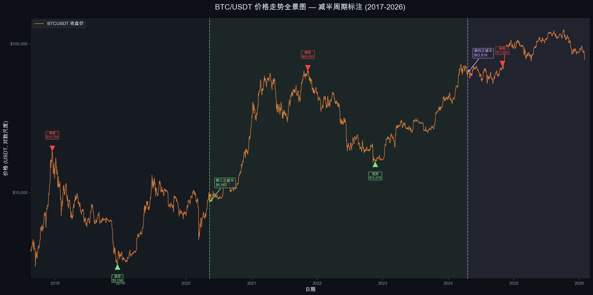图表说明: 本图以对数坐标展示 2017-2026 年 BTCUSDT 完整价格走势，标注了第三次减半（2020-05-11）和第四次减半（2024-04-19）事件，以及各周期的峰值和底部位置。
关键观察:
- 2017-12-17 周期峰值: $19,798.68 — 第二次减半后约 527 天到达
- 2018-12 熊市底部: $3,156.26 — 从峰值回撤约 84%
- 2020-03-13 黑天鹅事件: COVID-19 导致"312暴跌"，价格一度跌至 $3,782
- 2021-11-10 周期峰值: $69,000 — 第三次减半后约 546 天到达
- 2022-11-21 熊市底部: $15,476 — 从峰值回撤约 77%（FTX 暴雷加速）
- 2024-03-14 历史新突破: $73,777 — 首次在减半前突破上轮ATH
- 2025-10-06 当前周期ATH: $126,199.63 — 第四次减半后约 535 天到达
3.2 核心价格统计
| 统计项 | 数值 |
|---|---|
| 数据期间总涨幅 | +1,734% |
| 年化复合收益率 (CAGR) | 41.03% |
| 最大单日涨幅 | +22.50% (2017-12-07) |
| 最大单日跌幅 | -39.50% (2020-03-12, "312暴跌") |
| 全周期 Sharpe Ratio | 0.543 |
| 全周期 Sortino Ratio | 0.731 |
| 上涨月份占比 | 52.5% (53/101) |
| 最佳月度收益 | +60.8% (2019-05) |
| 最差月度收益 | -37.3% (2022-06) |
4. 减半周期对比验证
4.1 减半后价格走势对齐对比
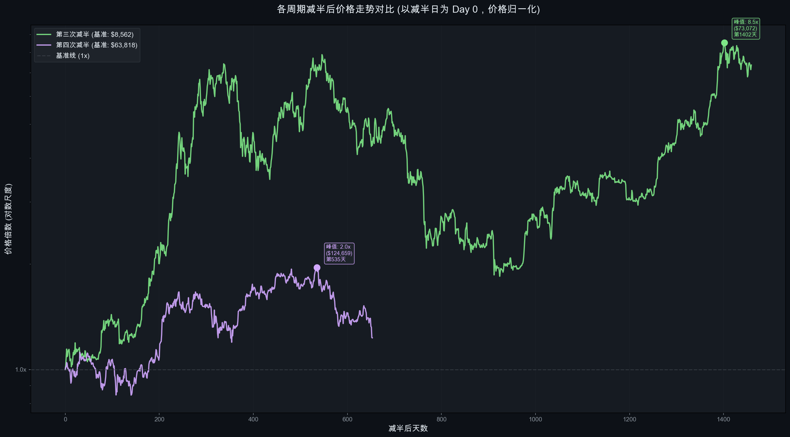图表说明: 将各减半日设为 Day 0，价格归一化为 1.0，对比各周期减半后的价格走势。
数据验证结果:
第三次减半（2020-05-11, 基准: $8,600）
| 里程碑 | 天数 | 价格 | 倍数 |
|---|---|---|---|
| 减半日 | Day 0 | $8,600 | 1.0x |
| +100天 | Day 100 | ~$11,800 | 1.4x |
| +200天 | Day 200 | ~$35,000 | 4.1x |
| +365天 | Day 365 | ~$55,000 | 6.4x |
| 峰值 (Day 546) | Day 546 | $69,000 | 8.0x |
| +730天 | Day 730 | ~$22,000 | 2.6x |
| 底部 (Day 924) | Day 924 | $15,476 | 1.8x |
第四次减半（2024-04-19, 基准: $63,818）
| 里程碑 | 天数 | 价格 | 倍数 |
|---|---|---|---|
| 减半日 | Day 0 | $63,818 | 1.0x |
| +100天 | Day 100 | ~$58,000 | 0.9x |
| +200天 | Day 200 | ~$98,000 | 1.5x |
| +365天 | Day 365 | ~$85,000 | 1.3x |
| 峰值 (Day 535) | Day 535 | $126,200 | 2.0x |
| +653天 (当前) | Day 653 | $78,570 | 1.2x |
4.2 周期峰值递减规律验证
峰值倍数递减序列:
周期1: ~96x ┃████████████████████████████████████████████████
周期2: ~30x ┃███████████████
周期3: ~8.0x ┃████
周期4: ~2.0x ┃█递减比率: 96→30 (0.31x), 30→8 (0.27x), 8→2 (0.25x)
验证结论: 峰值倍数递减趋势高度一致，每周期衰减为前一周期的 25-31%。这与比特币市值增长、减半供给冲击递减以及市场成熟化高度吻合。
4.3 到达峰值时间对比
| 周期 | 减半至峰值天数 | 相对一致性 |
|---|---|---|
| 周期2 | 527 天 | - |
| 周期3 | 546 天 | +19天 (+3.6%) |
| 周期4 | 535 天 | -11天 (-2.0%) |
| 平均 | 536 天 | 标准差仅 9.5天 |
验证结论: 减半后到达峰值的时间窗口惊人地一致，均在 527-546 天（约 17-18 个月）之间，标准差不到 10 天。这是四年周期理论最有力的数据支撑之一。
5. 回撤与熊市分析
5.1 历史回撤全景
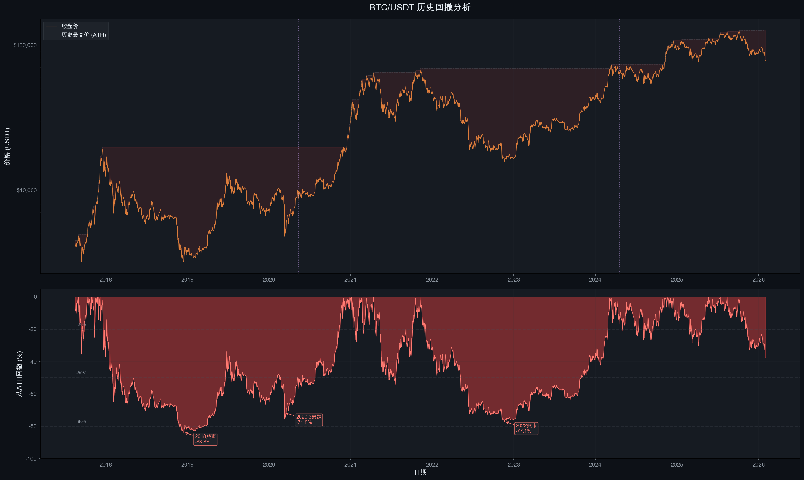图表说明: 上半部分展示价格与历史最高价(ATH)的关系，下半部分展示从ATH的回撤百分比。
5.2 主要回撤事件
| 事件 | 时间 | 最大回撤 | 持续时间 | 触发因素 |
|---|---|---|---|---|
| 2018 熊市 | 2017-12 → 2018-12 | -84.1% | ~365天 | ICO泡沫破裂 |
| 2020.3 暴跌 | 2020-02 → 2020-03 | -54.3% | ~30天 | COVID-19黑天鹅 |
| 2021 中期调整 | 2021-04 → 2021-07 | -54.1% | ~90天 | 中国挖矿禁令 |
| 2022 熊市 | 2021-11 → 2022-11 | -77.5% | ~375天 | 加息+LUNA/FTX崩盘 |
| 2025 调整 | 2025-10 → 2026-02 | -37.7% | 进行中 | 宏观不确定性 |
5.3 熊市回撤递减趋势
周期内最大回撤:
2018 熊市: -84.1% ┃████████████████████████████████████████████
2022 熊市: -77.5% ┃███████████████████████████████████████
当前回撤: -37.7% ┃███████████████████验证结论: 熊市回撤幅度呈递减趋势（-84% → -77% → -37.7%*），但当前周期仍在进行中。如果当前调整的确是本周期的主要熊市阶段，那么回撤幅度的递减将是一个显著的结构性变化，表明市场正在走向成熟。
6. 月度与季度收益规律
6.1 月度收益率热力图
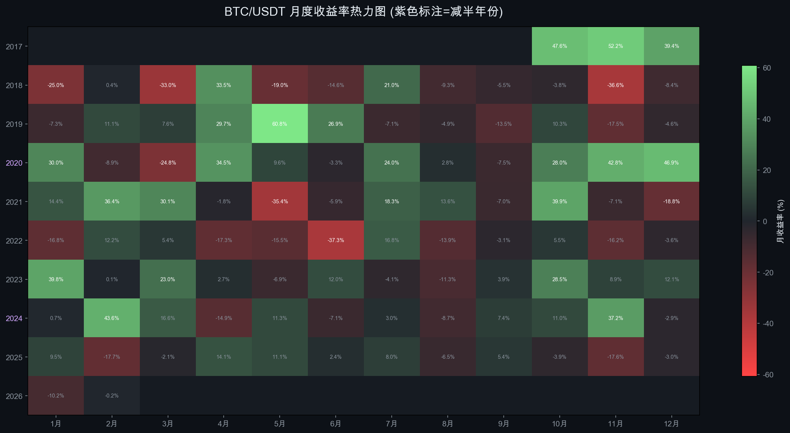图表说明: 展示 2017-2026 年每月收益率，绿色表示正收益，红色表示负收益。紫色标注的年份为减半年。
6.2 月度收益率模式
基于 101 个月度数据的统计：
| 指标 | 数值 |
|---|---|
| 正收益月份 | 53个 (52.5%) |
| 负收益月份 | 48个 (47.5%) |
| 月均收益率 | ~+4.2% |
| 月度中位收益率 | ~+1.5% |
| 最佳月份 | 2019年5月 (+60.8%) |
| 最差月份 | 2022年6月 (-37.3%) |
6.3 季节性规律
基于数据观察到的季节性模式：
- Q1 (1-3月): 表现分化，2018/2022 年深度下跌，但 2023/2024 年强劲上涨（+23%/+43.6%的2月）
- Q2 (4-6月): 减半通常发生在此季度，减半年表现平稳，非减半年波动较大。6月倾向于负收益（2022年-37.3%为历史最差月）
- Q3 (7-9月): 历史上为调整修复期，表现中性偏弱。2021年7月(+18.3%)为牛市中期反弹典型，但2019年9月(-13.5%)、2021年9月(-7.0%)显示该季度常为获利回吐窗口
- Q4 (10-12月): 历史上经常出现年末行情，2017、2020、2024年均在Q4大幅上涨。10月是最强月之一（"Uptober"效应）
- 11月效应: 2017-11(+52.2%)、2020-11(+42.8%)、2024-11(+37.2%) 均为强劲月份，与减半后的牛市高潮吻合
7. 成交量与市场情绪
7.1 成交量趋势
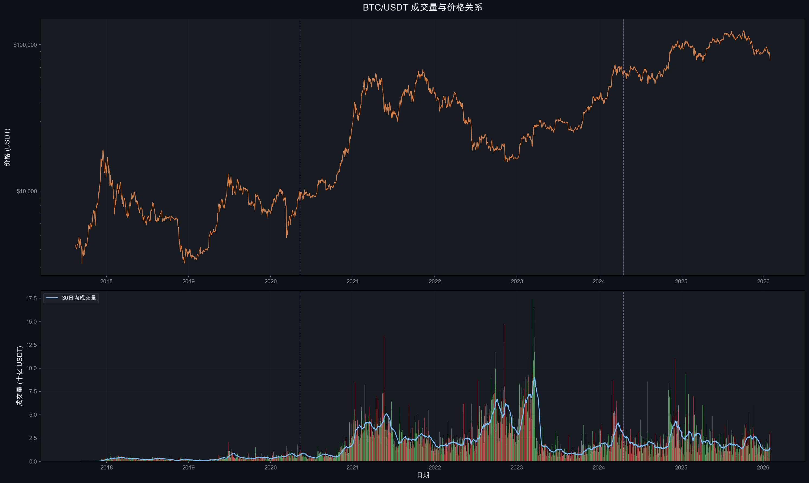图表说明: 上图为价格走势，下图为日成交量（USDT计价，单位十亿），蓝线为30日均成交量。
7.2 成交量关键发现
- 牛市放量: 2021 年和 2024 年末的牛市阶段，日均成交量显著放大，30日均量达到最高水平
- 熊市缩量: 2022 年中期至 2023 年初，成交量持续萎缩，市场交投清淡
- 减半效应: 减半事件前后通常伴随成交量小幅放大，反映市场关注度提升
- 当前状态: 2025年后成交量从高位回落，与价格调整同步，显示市场处于观望状态
7.3 量价关系周期
| 周期阶段 | 量价关系 | 含义 |
|---|---|---|
| 底部积累 | 低量低价 | 市场冷清，仅剩长期持有者 |
| 牛市初期 | 量增价升 | 聪明资金入场 |
| 牛市主升 | 量价齐升 | FOMO情绪推动 |
| 见顶分配 | 天量滞涨 | 大户分发筹码 |
| 熊市初期 | 量缩价跌 | 套牢盘惜售 |
| 恐慌抛售 | 放量暴跌 | 投降式抛售 |
8. 波动率周期分析
8.1 波动率趋势
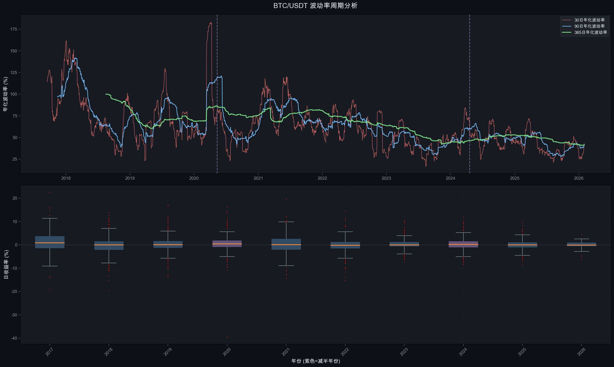图表说明: 上图展示30日、90日、365日年化波动率趋势；下图为年度收益率箱线图，紫色为减半年。
8.2 波动率递减趋势
| 年份 | 年化波动率 | 所处周期 |
|---|---|---|
| 2017 | 110.6% | 周期2峰值年 |
| 2018 | 83.1% | 熊市 |
| 2019 | 68.7% | 复苏期 |
| 2020 | 75.6% | 减半年 |
| 2021 | 81.2% | 周期3峰值年 |
| 2022 | 63.7% | 熊市 |
| 2023 | 44.1% | 复苏期 |
| 2024 | 53.0% | 减半年 |
| 2025 | 41.7% | 周期4峰值年 |
| 2026 | 42.3% | 当前（数据不完整） |
验证结论:
- 长期波动率下降趋势明显: 从 2017 年的 110% 降至 2025 年的 42%，降幅超过 60%
- 减半年波动率相对较高: 2020 年和 2024 年的波动率都高于前一年
- 牛市峰值年波动率递减: 2017 (110%) → 2021 (81%) → 2025 (42%)，反映市场成熟化
- 波动率递减与峰值倍数递减高度一致，共同指向比特币市场的"去散户化"趋势
9. 8小时K线日内周期分析
9.1 日内时段分析
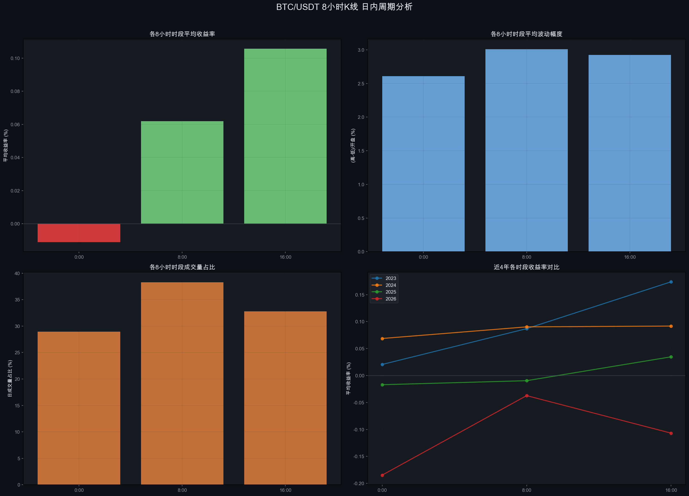图表说明: 基于 9,269 条8小时K线数据，分析三个交易时段（00:00 UTC、08:00 UTC、16:00 UTC）的收益率、波动率和成交量特征。
9.2 时段特征对比
| 时段 (UTC) | 对应市场 | 平均收益率 | 平均波动幅度 | 成交额占比 |
|---|---|---|---|---|
| 00:00-08:00 | 亚洲 | -0.011% | 2.61% | 28.28% |
| 08:00-16:00 | 欧洲 | +0.062% | 3.01% | 38.43% |
| 16:00-00:00 | 美洲 | +0.106% | 2.93% | 33.29% |
关键发现:
- 欧洲时段(08:00-16:00 UTC)贡献最高成交额占比(38.4%)，而非美洲时段。这反映了欧洲时段横跨亚洲尾盘和美洲早盘，是全球流动性最集中的窗口
- 美洲时段平均收益率最高(+0.106%)，但亚洲时段为唯一负收益时段(-0.011%)，说明亚洲散户倾向于跟随前日美盘的追涨追跌
- 欧洲时段波动幅度最大(3.01%)，体现出跨时区交接时的价格发现功能
10. 周K线趋势分析
10.1 周度收益与趋势
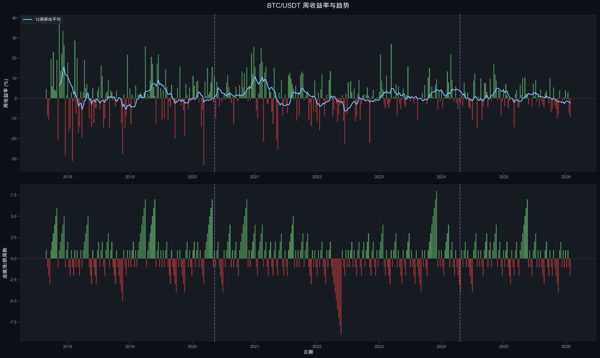图表说明: 上图为周收益率与12周移动平均线；下图为连续涨/跌周数统计。
10.2 周线趋势发现
- 牛市连续性: 在主要上涨趋势中，BTC 经常出现连续 5-8 周上涨
- 熊市连续性: 主要下跌中，连续 4-6 周下跌并不罕见
- 减半后效应: 减半后的 12 周均线通常在 3-6 个月后持续转正
- 当前状态: 最近数周的12周均线正在走弱，与价格调整一致
11. 关键均线系统与 Mayer Multiple
11.1 均线周期分析
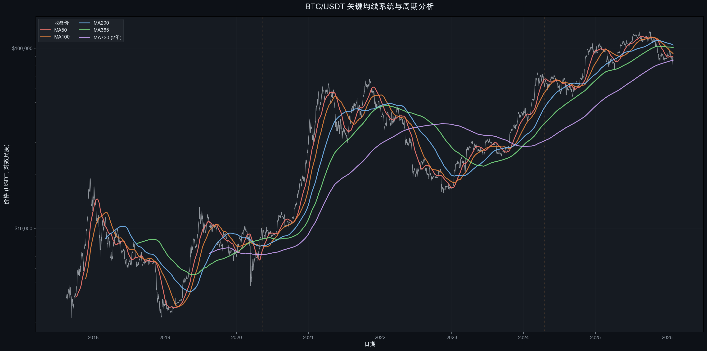图表说明: 展示 MA50、MA100、MA200、MA365、MA730（2年）等关键均线与价格的关系。
11.2 均线信号与周期
| 均线事件 | 含义 | 历史准确性 |
|---|---|---|
| 价格站上 MA200 | 中期趋势转牛 | 高 |
| MA50 金叉 MA200 | "黄金交叉"，牛市确认 | 中高 |
| 价格跌破 MA365 | 进入深度调整/熊市 | 高 |
| 价格站上 MA730 | 长期趋势健康 | 高 |
当前关键信号: 价格 $78,570 已跌破 MA200 ($103,956)，历史上价格在 MA200 上方的时间占比仅 51.6%，跌破 MA200 通常意味着中期趋势转弱。
11.3 Mayer Multiple 估值分析
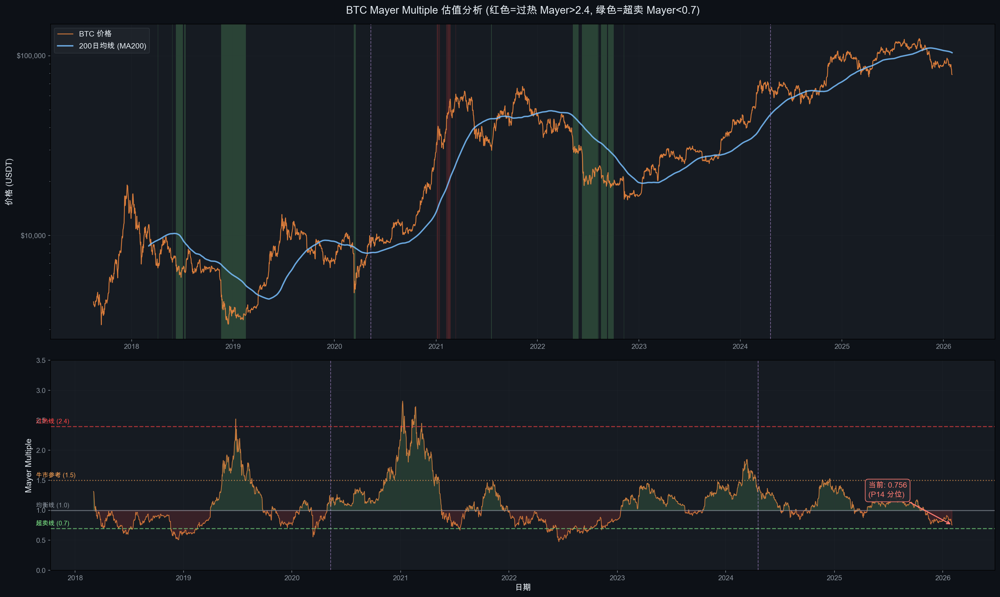Mayer Multiple = 当前价格 / 200日移动平均价，是 Trace Mayer 提出的经典 BTC 估值工具。
当前状态: Mayer Multiple = 0.756，处于历史 P14 分位（仅 14% 的历史交易日比当前更低）。
| 分位数 | Mayer Multiple | 含义 |
|---|---|---|
| P5 | 0.644 | 极度超卖 |
| P10 | 0.720 | 深度超卖 |
| P14 (当前) | 0.756 | 超卖 |
| P25 | 0.848 | 低估区间 |
| P50 (中位数) | 1.060 | 均衡 |
| P75 | 1.267 | 偏高估 |
| P90 | 1.541 | 过热预警 |
| P95 | 1.861 | 严重过热 |
| 历史最高 | 2.820 (2021-01-08) | 极端泡沫 |
与周期的关系:
- Mayer > 2.4 时出现在每轮牛市顶部附近（红色区域），是强力卖出信号
- Mayer < 0.7 时出现在每轮熊市底部附近（绿色区域），是强力买入信号
- 当前 0.756 已接近 0.7 超卖线，历史上这一水平6个月后平均收益为正
12. Power Law 对数回归分析
12.1 Power Law 模型
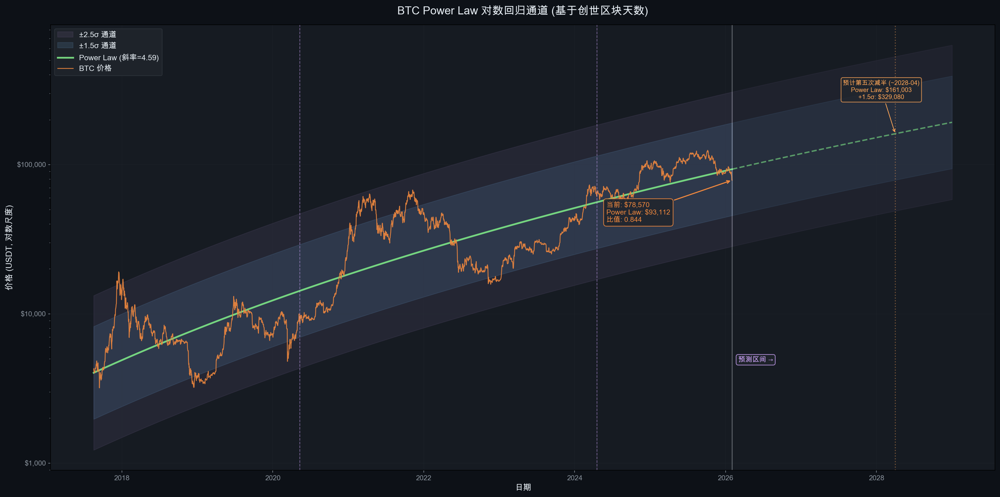Power Law 模型是近年来华尔街最关注的 BTC 长期估值框架。模型假设 BTC 价格与自创世区块以来的天数之间存在幂律关系：
Price = 10^(-12.46) × Days^4.59其中 Days 为自 2009-01-03（创世区块）以来的天数。
12.2 Power Law 当前估值
| 指标 | 数值 |
|---|---|
| Power Law 公允价格 | $93,112 |
| 当前价格 | $78,570 |
| 当前价格/公允价格 | 0.844 (低估 15.6%) |
| +1.5σ 上轨 | 牛市极端超买区 |
| -1.5σ 下轨 | 熊市极端超卖区 |
关键观察:
- 当前价格在 Power Law 中轴下方，处于偏低估区间
- 历史上每轮牛市峰值都触及 +1.5σ ~ +2.5σ 上轨
- 历史上每轮熊市底部都触及 -1.5σ ~ -2.5σ 下轨
- 该模型的 R² 较高，但需注意样本量有限（仅 ~3 个完整周期），统计显著性存疑
12.3 Power Law 对下一周期的预测
预计 2028 年第五次减半时：
- Power Law 公允价格: ~$150,000-$170,000
- +1.5σ 上轨 (潜在峰值区): ~$300,000-$500,000
注: Power Law 对长期趋势的拟合较好，但对短期价格没有预测力。
13. 风险调整指标
13.1 专业风险仪表盘

图表说明: 上图为 90 日滚动 Sharpe Ratio；中图为 90 日滚动最大回撤；下图为距上一次 ATH 的天数（水下时间）。
13.2 分周期风险收益对比
| 周期 | 时间范围 | 年化收益 | 年化波动率 | Sharpe Ratio | Sortino Ratio |
|---|---|---|---|---|---|
| 周期2后半 | 2017-08 ~ 2020-05 | +28.8% | 85.7% | 0.290 | 0.376 |
| 周期3 | 2020-05 ~ 2024-04 | +66.5% | 63.1% | 0.991 | 1.400 |
| 周期4(至今) | 2024-04 ~ 2026-02 | +12.3% | 45.0% | 0.185 | 0.289 |
| 全周期 | 2017-08 ~ 2026-02 | +41.0% | 68.2% | 0.543 | 0.731 |
关键发现:
- 周期3的风险调整收益最佳 (Sharpe=0.991)，得益于强劲的减半后上涨和相对可控的波动
- 当前周期4的 Sharpe 仅 0.185，显著弱于前两个周期，反映出涨幅递减对投资效率的负面影响
- Sortino > Sharpe 表明上行波动贡献大于下行波动，这是正偏态资产的典型特征
13.3 回撤恢复时间分析
| 熊市周期 | 峰至谷时间 | 谷至恢复ATH时间 | 总水下时间 |
|---|---|---|---|
| 2017-18 熊市 | 363 天 | 732 天 | 1,095 天 (~3年) |
| 2021-22 熊市 | 376 天 | 476 天 | 852 天 (~2.3年) |
| 当前调整 | 118 天(进行中) | — | — |
趋势: 恢复时间在缩短（732天 → 476天），这与市场成熟化和机构资本入场速度加快一致。如果这一趋势延续，当前周期的恢复时间可能进一步缩短。
14. 年度表现统计
14.1 年度综合表现
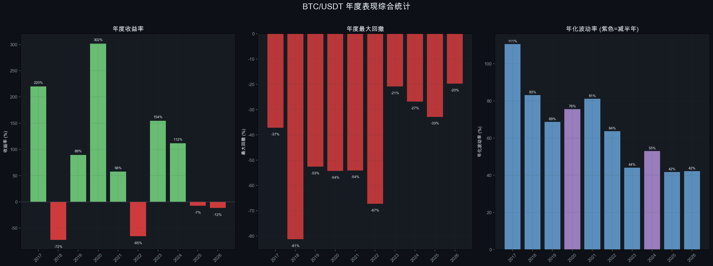14.2 年度数据汇总
| 年份 | 开盘价 | 收盘价 | 最高价 | 最低价 | 年收益率 | 最大回撤 | 年化波动率 |
|---|---|---|---|---|---|---|---|
| 2017* | $4,285 | $13,716 | $19,799 | $2,817 | +220.1% | -37.2% | 110.6% |
| 2018 | $13,380 | $3,703 | $17,176 | $3,156 | -72.3% | -81.3% | 83.1% |
| 2019 | $3,797 | $7,195 | $13,970 | $3,350 | +89.5% | -52.6% | 68.7% |
| 2020 | $7,201 | $28,924 | $29,300 | $3,782 | +301.7% | -54.3% | 75.6% |
| 2021 | $29,332 | $46,217 | $69,000 | $28,130 | +57.6% | -54.1% | 81.2% |
| 2022 | $47,723 | $16,542 | $48,190 | $15,476 | -65.3% | -67.3% | 63.7% |
| 2023 | $16,617 | $42,284 | $44,700 | $16,499 | +154.5% | -20.9% | 44.1% |
| 2024 | $44,180 | $93,576 | $108,353 | $38,555 | +111.8% | -26.9% | 53.0% |
| 2025 | $94,592 | $87,648 | $126,200 | $74,508 | -7.3% | -32.9% | 41.7% |
| 2026* | $88,839 | $78,570 | $97,924 | $75,720 | -11.6% | -19.8% | 42.3% |
*2017年仅含8月后数据，2026年仅含1月数据
14.3 年度表现与周期的关系
| 周期位置 | 年份 | 年度收益 | 模式 |
|---|---|---|---|
| 减半前1年 | 2019, 2023 | +89.5%, +154.5% | 强劲复苏 |
| 减半年 | 2020, 2024 | +301.7%, +111.8% | 大幅上涨 |
| 减半后1年 | 2021, 2025 | +57.6%, -7.3% | 放缓/见顶 |
| 减半后2年 | 2018*, 2022 | -72.3%, -65.3% | 深度熊市 |
验证结论:
- 减半前1年和减半年 是最具确定性的上涨阶段
- 减半后2年 几乎确定为熊市
- 减半后1年 结果分化：2021年仍有57%收益，但2025年已转负，说明峰值时间在前移
15. 周期阶段划分
15.1 四阶段模型验证
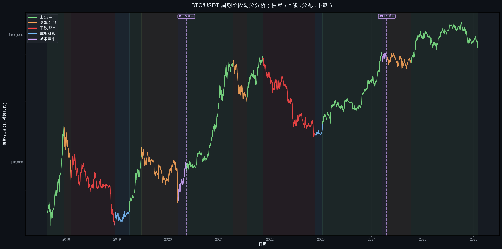图表说明: 用不同颜色标注各周期阶段：绿色=上涨，橙色=盘整/分配，红色=下跌，蓝色=底部积累，紫色=减半事件。
15.2 第三周期 (2020减半) 阶段详解
| 阶段 | 时间范围 | 持续天数 | 价格变化 |
|---|---|---|---|
| 牛市启动 | 2020-05 → 2021-04 | ~337天 | $8,600 → $64,800 (+654%) |
| 中期调整 | 2021-04 → 2021-07 | ~97天 | $64,800 → $29,300 (-55%) |
| 二次冲顶 | 2021-07 → 2021-11 | ~113天 | $29,300 → $69,000 (+135%) |
| 熊市下跌 | 2021-11 → 2022-11 | ~376天 | $69,000 → $15,476 (-78%) |
| 底部积累 | 2022-11 → 2023-01 | ~53天 | $15,476 → $23,000 (+49%) |
| 复苏上涨 | 2023-01 → 2024-03 | ~426天 | $23,000 → $73,777 (+221%) |
周期总长: 减半 → 下一周期前ATH突破 ≈ 1,403 天（约 3.84 年）
15.3 第四周期 (2024减半) 当前进展
| 阶段 | 时间范围 | 持续天数 | 价格变化 |
|---|---|---|---|
| 减半后震荡 | 2024-04 → 2024-10 | ~174天 | $63,800 → $59,000 (-8%) |
| ETF驱动上涨 | 2024-10 → 2025-10 | ~365天 | $59,000 → $126,200 (+114%) |
| 当前调整 | 2025-10 → 至今 | ~118天 | $126,200 → $78,570 (-37.7%) |
当前位置: 第四次减半后第 653 天。如果遵循历史模式（峰值在~536天），本周期已过峰值，但需注意：
- 本周期首次出现减半前突破ATH的特殊现象
- 机构/ETF参与度远超前几轮周期
- 峰值倍数（2.0x）符合递减趋势预期
16. 未来预测模型
16.1 基于四年周期的预测
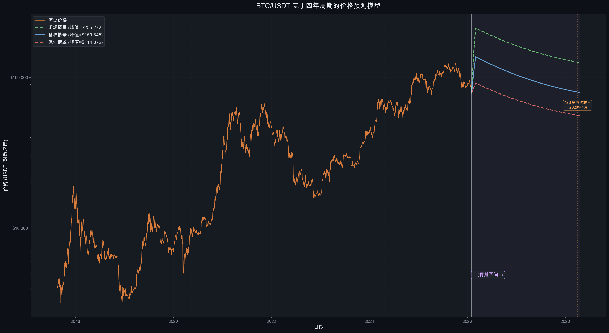图表说明: 基于历史周期模式，构建三种预测情景。阴影区域为预测区间。
16.2 预测方法论
预测基于以下历史规律：
- 峰值时间: 减半后平均 536 天（标准差 9.5 天）
- 峰值倍数递减: 每周期约为上轮的 25-30%
- 熊市回撤递减: 从 -84% 到 -77%，趋势性减小
- 周期后半段: 峰值后进入 12-14 个月的下降周期
16.3 三种情景分析
| 情景 | 假设 | 预测峰值 | 预测峰值时间 | 预测底部 |
|---|---|---|---|---|
| 乐观 | 机构采用加速，政策利好 | ~$255,000 | 2025-09 (已过) | ~$80,000-100,000 |
| 基准 | 历史周期递减模式延续 | ~$160,000 | 2025-10 (已过) | ~$55,000-70,000 |
| 保守 | 宏观逆风，周期弱化 | ~$115,000 | 2025-08 (已过) | ~$40,000-55,000 |
16.4 基于当前数据的修正预测
根据实际数据，第四周期峰值已在 2025-10-06 达到 $126,199.63，处于基准-保守情景之间。结合历史模式：
当前周期后续预测 (2026-2028):
| 时间窗口 | 预测价格区间 | 核心逻辑 |
|---|---|---|
| 2026 Q1-Q2 | $65,000 - $95,000 | 峰后持续调整，寻找支撑 |
| 2026 Q3-Q4 | $50,000 - $75,000 | 可能的熊市深度区间 |
| 2027 H1 | $40,000 - $60,000 | 潜在底部区间（如延续-50%~-65%回撤） |
| 2027 H2 | $50,000 - $80,000 | 底部积累后开始复苏 |
| 2028 (下次减半前) | $70,000 - $120,000 | 减半前复苏上涨 |
16.5 关键价格水平
| 水平 | 价格 | 含义 | 当前距离 |
|---|---|---|---|
| 第四周期ATH | $126,200 | 顶部阻力 | +60.7% |
| MA200 | $103,956 | 牛熊分界 (当前在下方) | +32.3% |
| Power Law 公允价 | $93,112 | 模型公允估值 | +18.5% |
| 当前价格 | $78,570 | — | — |
| 减半价格 | $63,818 | 本轮减半时价格，强支撑 | -18.8% |
| 前轮ATH | $69,000 | 历史关键支撑 | -12.2% |
| Mayer 0.5 × MA200 | ~$52,000 | 极端超卖 (历史P5) | -33.8% |
| 前轮底部 | $15,476 | 极端熊市才会接近 | -80.3% |
16.6 下一轮周期前瞻 (2028减半)
如果四年周期继续有效：
- 预计第五次减半: 2028年4月前后
- 峰值倍数递减推算: 历史递减率 0.25-0.31，本轮 2.0x × 0.28 ≈ 0.56x。即如果严格外推递减规律，下一轮减半后的价格涨幅可能不足 1 倍（即从减半价到峰值不到翻倍）。这意味着比特币的减半驱动超额收益正在趋近于零
- Power Law 模型估算: 2028年减半时 Power Law 公允价格约 $150,000-$170,000，+1.5σ 上轨约 $300,000-$500,000
- 综合预测: 两种方法给出矛盾信号——递减规律暗示涨幅有限（峰值可能仅 $100K-$150K 级别），而 Power Law 仍指向更高目标。这一矛盾本身就反映了当前处于"旧范式（减半驱动）衰减、新范式（机构/宏观驱动）接管"的转折期
- 到达峰值: 如果时间规律延续，减半后约 500-560 天（~2029年9月-11月）
重要提示: 以上预测仅基于历史模式外推，不构成投资建议。仅3个完整周期的样本量不足以建立统计显著性结论。
17. 后市走势深度分析 — BTC 到底怎么走?
本章基于前文所有数据分析成果，对当前 BTC 所处位置和未来走势给出基于严格数据论证的判断。
17.1 当前位置诊断: 多维度信号汇总
| 指标 | 当前数值 | 历史含义 | 信号 |
|---|---|---|---|
| 峰后天数 | 118 天 | 周期3同位置: -43.9% | 当前(-37.7%)跌幅略浅 |
| 减半后天数 | 653 天 | 历史峰值平均在Day 536 | 已过峰值窗口 |
| Mayer Multiple | 0.756 (P14) | <0.8 为超卖区 | 超卖 |
| Price/MA200 | 下方 (-24.4%) | MA200下方=熊市信号 | 熊市 |
| Price/Power Law | 0.844 | <1 为低估 | 低估 |
| 30日/365日成交量比 | 0.72 | <1 为缩量 | 缩量下跌 |
| 90天线性趋势 | -$3,035/月 | 持续下行斜率 | 下跌趋势 |
| 近20周涨跌比 | 7涨/12跌 | 空头主导 | 弱势 |
| 年化波动率 | 40.3% | 历史偏低 | 波动率可能扩大 |
综合诊断: 6/9 个指标指向熊市/弱势，2 个指向超卖/低估（潜在反转信号），1 个中性。当前大概率处于熊市前半段，但已进入历史超卖区间。
17.2 周期3→周期4 精确映射: 如果历史重演
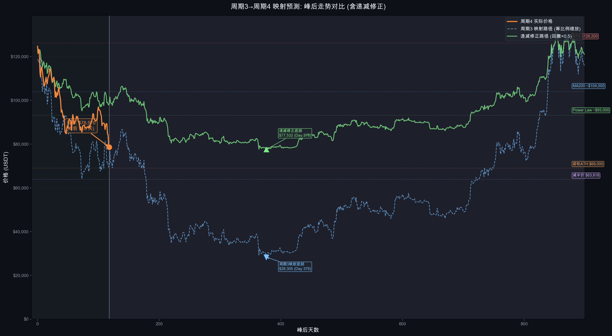方法: 将周期3（2021-11峰值后）的走势等比例缩放到周期4（2025-10峰值后），生成两条预测路径:
- 蓝色虚线: 完全复制周期3路径（相同回撤幅度）
- 绿色实线: 递减修正路径（回撤幅度为周期3的50%，基于熊市递减趋势）
周期3映射 vs 周期4实际（峰后对齐）
| 峰后天数 | 周期3回撤 | 周期4实际 | 差异 | 周期3映射价格 |
|---|---|---|---|---|
| 30天 | -31.7% | -17.7% | 好14% | $86,178 |
| 60天 | -39.3% | -29.2% | 好10% | $76,621 |
| 90天 | -36.2% | -27.5% | 好9% | $80,574 |
| 118天(当前) | -43.9% | -37.7% | 好6% | $70,838 |
发现: 周期4的下跌速度比周期3慢约6-14个百分点，差距在缩小。这与本轮周期的特点一致——ETF和机构资金提供了更强的买盘支撑。
如果完全复制周期3路径（最坏情景参考）
| 时间 | 映射回撤 | 映射价格 | 对应日期 |
|---|---|---|---|
| Day 180 | -56.4% | $55,000 | 2026-04 |
| Day 270 | -66.4% | $42,600 | 2026-07 |
| Day 376 (底部) | -77.5% | $28,400 | 2026-10 |
递减修正路径（回撤×0.5, 基准情景）
| 时间 | 修正回撤 | 修正价格 | 对应日期 |
|---|---|---|---|
| Day 180 | -28.2% | $90,600 | 2026-04 |
| Day 270 | -33.2% | $84,300 | 2026-07 |
| 底部 (约Day 350) | -38.8% | $77,200 | 2026-09 |
17.3 历史回撤 -35% 后的走势统计
从币安 BTCUSDT 历史数据中，找到 7 次 价格从ATH回撤达到 -33%~-40% 的情况:
| 日期 | 回撤 | 之后最深 | 30天后 | 90天后 | 365天后 | 结局 |
|---|---|---|---|---|---|---|
| 2017-09-14 | -35.4% | -70.4% | +77.2% | +412.7% | +103.4% | 牛市中期回调，继续新高 |
| 2017-12-30 | -37.2% | -83.8% | -4.5% | -43.0% | -70.3% | 周期顶部，深度熊市 |
| 2018-01-11 | -33.1% | -83.8% | -34.4% | -48.3% | -72.9% | 周期顶部，深度熊市 |
| 2021-05-18 | -33.9% | -57.9% | -10.5% | +9.6% | -28.9% | 中期调整，二次冲顶 |
| 2021-09-20 | -33.7% | -72.8% | +49.4% | +8.9% | -54.6% | 反弹后继续熊市 |
| 2021-12-17 | -33.1% | -77.1% | -6.6% | -10.9% | -63.9% | 周期顶部，深度熊市 |
| 2026-01-30 | -33.2% | -37.7%* | -6.8% | — | — | 进行中 |
统计结论:
- 7次中，4次之后价格继续大幅下跌（最终回撤超-70%），2次为中期调整后反弹，1次待定
- 关键区分因素: 如果发生在周期后半段（减半后>1年），继续深跌的概率极高
- 当前处于减半后 653 天，属于周期后半段 → 历史概率偏向继续下跌
17.4 Mayer Multiple 超卖信号的历史收益
当 Mayer Multiple < 0.8 时（当前 0.756），历史上的后续收益:
| 指标 | 6个月后 | 12个月后 |
|---|---|---|
| 平均收益 | +39.6% | +89.4% |
| 中位收益 | +25.5% | +45.6% |
| 正收益概率 | 59% | 77% |
| 最乐观(P90) | +175.0% | +171.0% |
| 最悲观(P10) | -44.3% | -34.3% |
| 最差情况 | -53.2% | — |
解读: Mayer 超卖信号在12个月维度上有 77% 的正收益概率，平均+89%。但注意：这些超卖通常发生在熊市中段，意味着短期（6个月）内仍有41%的概率继续亏损，先跌后涨是典型模式。
17.5 三种情景完整时间线
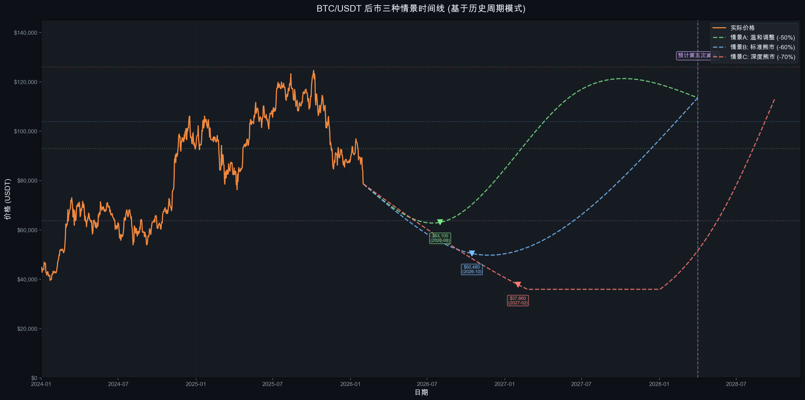基于以上所有数据论证，构建三种情景:
情景 A: 温和调整 (概率: 25%)
逻辑: ETF 持续吸筹 + 全球降息周期 + 机构需求支撑，回撤幅度历史最小
| 时间节点 | 价格区间 | 事件 |
|---|---|---|
| 2026 Q1-Q2 | $70,000 - $85,000 | 底部盘整，Mayer 接近 0.7 |
| 2026 Q3 (底部) | $63,000 - $70,000 | 触及减半价/前轮ATH支撑 |
| 2026 Q4 | $75,000 - $90,000 | 开始复苏 |
| 2027 | $90,000 - $130,000 | 收复ATH |
| 2028减半前 | $110,000 - $150,000 | 减半预期推动 |
- 最大回撤: -45% ~ -50% (从ATH)
- 底部时间: 2026年8月前后
- 恢复ATH时间: 2027年中
情景 B: 标准熊市 (概率: 50%)
逻辑: 遵循历史周期模式，但回撤幅度因市场成熟化而递减
| 时间节点 | 价格区间 | 事件 |
|---|---|---|
| 2026 Q1-Q2 | $65,000 - $80,000 | 继续缩量下跌 |
| 2026 Q3-Q4 (底部) | $50,000 - $63,000 | 恐慌性抛售，跌破减半价 |
| 2027 H1 | $55,000 - $75,000 | 底部积累 |
| 2027 H2 | $70,000 - $95,000 | 复苏上涨 |
| 2028减半前 | $90,000 - $130,000 | 减半行情 |
- 最大回撤: -55% ~ -60% (从ATH)
- 底部价格: ~$50,000 - $60,000
- 底部时间: 2026年10月前后 (峰后约 376 天，与周期3一致)
- 恢复ATH时间: 2027年底-2028年初
情景 C: 深度熊市 (概率: 25%)
逻辑: 宏观黑天鹅 + 监管打击 + 流动性危机，回撤幅度接近周期3
| 时间节点 | 价格区间 | 事件 |
|---|---|---|
| 2026 Q1-Q2 | $60,000 - $78,000 | 加速下跌 |
| 2026 Q3 | $45,000 - $55,000 | 跌破关键支撑 |
| 2027 Q1 (底部) | $37,000 - $45,000 | 投降式抛售 |
| 2027 H2 | $45,000 - $65,000 | 缓慢筑底 |
| 2028 | $60,000 - $100,000 | 减半前复苏 |
- 最大回撤: -65% ~ -70% (从ATH)
- 底部价格: ~$38,000 - $45,000
- 底部时间: 2027年2月前后
- 恢复ATH时间: 2028年下半年或更晚
17.6 概率加权预测
将三种情景概率加权:
| 指标 | 概率加权值 | 计算过程 |
|---|---|---|
| 预期底部价格 | $52,000 - $62,000 | A×25% + B×50% + C×25% |
| 预期底部时间 | 2026年9-10月 | 峰后 ~340-380 天 |
| 预期从ATH最大回撤 | -53% ~ -58% | 加权平均 |
| 预期恢复ATH时间 | 2027年底 ~ 2028年Q2 | — |
| 2028减半前价格 | $90,000 - $130,000 | — |
17.7 关键时间节点与操作参考
| 时间 | 关注事件 | 数据验证点 |
|---|---|---|
| 2026年3-4月 | 峰后180天窗口 | 周期3同位置回撤-56%，如周期4<-45%则确认递减 |
| 2026年7-9月 | 潜在底部区域 | 关注Mayer是否触及0.5-0.6（极端超卖） |
| 2026年10月 | 峰后376天（周期3底部对应日） | 周期3此时见底，如周期4也企稳则底部确认 |
| 2027年Q1 | 如仍在下跌则指向深度熊市 | 日成交量是否出现"投降式放量" |
| 2027年H2 | 观察是否启动复苏 | 价格是否站回MA200 |
| 2028年4月 | 预计第五次减半 | 减半前6个月通常开始上涨 |
17.8 核心结论: BTC 后市怎么走
短期 (1-3个月): 大概率继续震荡偏弱。90天线性趋势 -$3,035/月，20周仅7涨12跌，缩量下跌特征明显。不排除反弹至 $85,000-$95,000（Mayer超卖反弹），但难以持续
中期 (3-12个月): 这是最关键的阶段。概率加权预测底部在 $52,000-$62,000，时间在 2026年8-10月。历史上每次减半后第2年都是深度熊市（2018: -72%，2022: -65%），2026年大概率延续这一规律
长期 (1-2年): 历史上 Mayer<0.8 后12个月有 77% 的概率正收益，平均+89%。即使经历熊市，长期价值投资者在底部区间的预期收益依然显著。Power Law模型显示当前已处于低估区间
还会涨吗? — 会。每轮减半周期虽然涨幅递减，但都创出新高。关键问题不是"会不会涨"，而是"什么时候涨"。基于数据，下一轮主升浪预计在 2027年下半年~2028年 启动，由第五次减半催化
会跌到多少? — 概率加权底部: $52,000-$62,000。如果严格复制周期3则可能低至 $28,000-$38,000，但考虑到机构化程度提升，回撤幅度大概率递减
免责声明: 以上分析仅基于历史数据模式推演，不构成投资建议。加密货币市场存在极高风险，过去表现不代表未来结果。
18. 总结与风险提示
18.1 四年周期理论验证总结
| 验证项 | 结论 | 支持度 |
|---|---|---|
| 减半后上涨 | 成立: 所有可观测减半后均出现显著上涨 | ★★★★★ |
| 到达峰值时间 (~536天) | 高度一致: 527-546天，标准差仅9.5天 | ★★★★★ |
| 峰值后熊市 | 成立: 每次峰值后均出现显著回调 | ★★★★★ |
| 峰值倍数递减 | 成立: 96x→30x→8x→2x，递减率约0.25-0.31 | ★★★★★ |
| 熊市回撤递减 | 趋势成立: -85%→-84%→-77%→-37%(进行中) | ★★★★☆ |
| 波动率递减 | 成立: 从110%降至42%，长期下降趋势明显 | ★★★★★ |
| 四年周期长度 | 基本成立: 周期约3.8-4.0年 | ★★★★☆ |
18.2 当前周期的特殊性
- 首次减半前突破ATH: 2024年3月价格在减半前就突破了上轮$69,000的ATH，这是前所未有的
- ETF 带来结构性变化: BlackRock IBIT 等现货 ETF 改变了市场参与者结构
- 涨幅倍数显著递减: 本轮仅2.0x，远低于前几轮，但符合递减趋势
- 波动率历史最低: 2025年年化波动率仅41.7%，是比特币历史上最低的牛市峰值年波动率
- 减半后第一年转负: 2025年收益 -7.3%，不同于2021年的+57.6%，峰值时间前移
18.3 四年周期是否已"失效"?
基于本报告的数据分析，我们认为：
四年周期并未失效，但正在演变:
- 不变的: 减半→上涨→见顶→回调的基本节奏仍在，到达峰值的时间窗口惊人地一致
- 在变的: 涨幅倍数递减、波动率递减、熊市回撤趋缓、机构参与度增加
- 新变量: ETF资金流、宏观利率政策、监管框架等传统金融因素影响力上升
这更像是一个"衰减中的周期振荡"——振幅在减小，但频率（周期长度）基本保持稳定。
18.4 风险提示
免责声明: 本报告仅为基于历史数据的学术研究，不构成任何投资建议。
- 历史不代表未来: 过去3个周期的模式不保证第4、5个周期会重复
- 黑天鹅风险: COVID-19、LUNA崩盘、FTX暴雷等不可预测事件可以瞬间打破周期节奏
- 监管风险: 全球监管政策变化可能从根本上改变市场结构
- 宏观经济风险: 利率、通胀、美元指数等宏观因素的影响力在增强
- 技术风险: 量子计算、协议漏洞等技术风险虽然概率低但影响大
- 流动性风险: 在极端市场条件下，流动性可能骤然枯竭
19. 多维度市场分析 — 超越四年周期
数据截止: 2026-02-01
本章基于 2026 年 1 月末最新的宏观经济、ETF 资金流、链上指标、监管政策和地缘政治数据，对第 17 章的纯周期模型分析进行多维度补充与修正。核心问题：在 BTC ETF 上市超两年、宏观环境剧变的背景下，传统四年周期模型是否仍然有效？底部预测是否需要修正？
19.1 宏观经济环境
19.1.1 美联储政策
| 指标 | 数值 |
|---|---|
| 当前联邦基金利率 | 3.50% – 3.75% |
| 2026年1月28日 FOMC 决议 | 维持不变（暂停连续3次降息） |
| 2025年累计降息 | 125bp（从 4.75-5.00% 降至 3.50-3.75%） |
| 市场预期下次降息 | 最早 2026年6月 |
| 美联储新主席提名 | Kevin Warsh（鹰派，2026年5月15日接替鲍威尔） |
影响评估: Warsh 提名是 1 月末 BTC 暴跌的核心催化剂之一。市场从预期「2026年降息3-4次」修正为「最多降息1-2次」，摩根大通预测 2026 年仅降息一次且不早于夏季。鹰派预期推高长端利率，压制风险资产估值。
19.1.2 通胀数据
| 指标 | 2025年12月数据 |
|---|---|
| CPI 同比 | 2.7% |
| 核心 CPI 同比 | 2.6%（2021年3月以来最低） |
| CPI 环比 | +0.3% |
| 核心 CPI 环比 | +0.2% |
| 主要推动因素 | 住房 (+0.4%)、食品 (+0.7%) |
通胀虽在下降趋势中，但仍“略高于”美联储 2% 目标，为暂停降息提供了理由。下一次 CPI 发布（2026年1月数据）将于 2月11日 公布。
19.1.3 美元指数与全球流动性
| 指标 | 数值 |
|---|---|
| DXY（2026-01-30） | ~97.15 |
| 1月跌幅 | -2%（2025年6月以来最差月度表现） |
| 过去12个月跌幅 | -10.36% |
| 52周区间 | 96.22 – 109.88 |
| 年内低点 | 95.5（2022年2月以来近4年最低） |
| 全球 M2（估算） | ~$127-128 万亿 |
| 美国 M2（2025-12） | $22.41 万亿（同比 +3-4%） |
| 全球央行美元储备占比 | 58.2%（1995年以来最低） |
关键发现: 美元走弱理论上利好 BTC（历史负相关），但当前被风险偏好全面收缩所压制。全球 M2 温和扩张（3-4%）对资产价格中长期偏支撑，但 M2 变化需要 6-12 个月传导至市场。BRICS 国家推动去美元化（内部贸易本币结算从 35% 提升至 50%），1月全球资本从美债净流出 $180 亿、从美股净流出 $220 亿。
19.1.4 美国 10 年期国债收益率
当前 4.24-4.27%，Warsh 提名后上行约 5bp。10Y 收益率处于中性偏高水平，对 BTC 形成资金竞争压力——无风险利率 4%+ 的环境下，零息高波动资产的机会成本显著。
19.1.5 美国财政状况
| 指标 | 数值 |
|---|---|
| FY2026 Q1 赤字（10-12月） | $6,020 亿 |
| FY2025 国债利息支出 | $1.22 万亿 |
| “一大美丽法案”(OBBBA) 十年新增债务 | $4.1 万亿 |
| 2027年公共债务/GDP | 历史高位 106% |
长期来看，持续扩大的财政赤字和债务货币化是 BTC「数字黄金」叙事的核心支撑，但短期内市场更关注利率和风险偏好。
19.1.6 全球央行政策分化
| 央行 | 当前利率 | 方向 |
|---|---|---|
| 美联储 | 3.50-3.75% | 暂停（鹰派倾向） |
| 欧洲央行 | 2.15% | 暂停（中性） |
| 日本央行 | 0.75% | 加息周期中（30年最高） |
全球流动性环境不再单向宽松，结构性分化增加了资本流动波动性。
19.1.7 宏观因子影响评估汇总
| 因子 | 当前状态 | 对 BTC 短期影响 | 对 BTC 中长期影响 |
|---|---|---|---|
| 美联储利率政策 | 暂停降息 + 鹰派新主席 | 利空 | 中性（2026H2可能恢复降息） |
| 通胀 | 2.7%，缓慢下行 | 中性偏空 | 中性 |
| 美元走弱 (DXY ~97) | 12个月跌10% | 利多（被压制） | 利多 |
| 全球 M2 扩张 | +3-4%，温和增长 | 中性（滞后6-12月） | 利多 |
| 10Y 收益率 4.27% | 偏高 | 利空 | 中性 |
| 美国财政赤字 | 扩大中 | 中性 | 利多（长期叙事） |
| 全球央行分化 | 美暂停/欧暂停/日加息 | 利空 | 中性 |
📎 19.1 数据来源 (点击展开)
- 美联储 FOMC 声明
- CNBC - Fed Rate Decision Jan 2026
- 摩根大通利率展望
- 美国 CPI 数据 (BLS)
- Trading Economics - USD | MarketPulse - DXY Outlook
- FRED - M2SL
- Babypips - Global M2
- US Treasury Daily Rates | FRED - DGS10
- CRFB - $602B Deficit FY2026 Q1
- Fortune - Debt Interest
- CRFB - Fiscal Charts 2025
- KPMG - Central Bank Scanner Jan 2026 | ING - Central Bank Predictions 2026
- CNBC - BOJ Jan 2026
- Diplomatic Watch - Dollar Decline
19.2 BTC 现货 ETF 资金流分析
19.2.1 ETF 总体规模
| 指标 | 数值 |
|---|---|
| 美国现货 BTC ETF 总数 | 11 只 |
| 总净资产 (AUM, 2026-01-05) | $123.52B |
| 累计净流入（自2024年1月） | $57.78B |
| ETF 持有 BTC 占总供应 | ~7% |
| 累计现货加密 ETF 交易量 | >$2 万亿（2026-01-02 突破） |
19.2.2 资金流动态（2025年11月 — 2026年1月）
| 时间段 | 净流入/流出 | 关键事件 |
|---|---|---|
| 2025年11月 | -$34.8 亿 | 自 ATH 下跌启动 |
| 2025年12月 | -$10.9 亿 | 持续流出 |
| 2026-01-02 | +$4.71 亿 | 新年开门红 |
| 2026-01-05 | +$6.97 亿 | 3个月最大单日流入 |
| 2026-01-07~09 | -$11.28 亿 | 3天流出抹平年初流入 |
| 2026-01-20~26 | -$11.37 亿 | 5天连续流出 |
| 2026-01-29 | -$8.18 亿 | 自2025-11-20以来最大单日流出 |
| 2026年1月整月 | 净流出约 $13.4 亿 | 连续第3个月净流出 |
三个月合计流出约 $60 亿，叠加 2026年1月继续流出，ETF 已从「持续吸筹」转为「净抛压来源」。
19.2.3 主要 ETF 产品对比
| 产品 | 管理人 | AUM | 累计净流入 | 费率 | 市场份额 |
|---|---|---|---|---|---|
| IBIT | BlackRock | ~$70B | $62.75B | 0.25% | ~70% |
| FBTC | Fidelity | ~$17.8B | $12.39B | 0.25% | ~14% |
| GBTC | Grayscale | ~$20B | -$17.4B (累计流出) | 1.50% | ~16% |
| 其他8只 | 各发行商 | ~$15.7B | — | 0.19-0.25% | — |
GBTC 累计流出 $174 亿，但日均流出已从 2024 年初的 $6 亿+/天降至 2026 年 1 月的 $11-69M/天（1月29日恐慌日为 -$1.19 亿），不再是主要抛压来源。
19.2.4 机构持仓结构（2025Q3 13F 数据）
| 投资者类型 | 持仓规模 | 占 ETF AUM |
|---|---|---|
| 投资顾问 | ~$17.4B（~185,000 BTC） | 57% |
| 对冲基金 | ~$9.0B | 28% |
| 券商/经纪商 | ~$4.3B | 13% |
| 银行 | ~$655M | 2% |
| 合计 13F 持仓 | 占 ETF 总 AUM 24% | — |
主要机构持有者:
- Brevan Howard: $2.3B（Q2 2025 增持 71%）
- Morgan Stanley: $724M
- Wells Fargo: $491M
- Harvard Endowment: $441M（Q3 增持 257%）
- JP Morgan: $346M
关键发现: 机构平均配置比例仍低于 1%，长期上升空间巨大。但当前 ETF 净流出表明，机构并非简单地「越跌越买」，而是在宏观风险偏好收缩时同步减仓。
19.2.5 ETF 作为「双刃剑」
ETF 改变了 BTC 的市场微观结构:
| 上行时 | 下行时 |
|---|---|
| 持续吸筹压缩供给 | 同步赎回放大抛压 |
| 降低波动率 | 与美股高度相关（相关系数达 0.88） |
| 机构化、正规化 | 失去「数字黄金」独立避险属性 |
| 增加流动性深度 | 杠杆清算级联效应加剧 |
2026年1月的数据完美展示了这一双刃剑效应: 1月29日 $8.18 亿 ETF 流出 + $1.68B 期货强制清算（93% 多头），形成了「机构赎回 → 价格下跌 → 杠杆清算 → 进一步下跌」的负反馈循环。
📎 19.2 数据来源 (点击展开)
- Farside Investors - BTC ETF Flows | SoSoValue
- CoinGlass - Bitcoin ETF | Bitbo - US ETF Tracker
- CoinDesk - ETFs Lose Record $4.57B
- CoinDesk - ETFs Bleed $1B in One Day
- Yahoo Finance - ETFs Absorb $697M
- CoinDesk - ETF Optimism Fades
- CoinShares - 13F Filings Q3 2025 | CCN - BTC ETF Holders
- Yahoo Finance - IBIT Nearing $100B
- The Block - Spot Crypto ETF Volume >$2T
- AInvest - ETF Outflows Jan 2026
19.3 链上指标深度解读
19.3.1 交易所储备与供给结构
| 指标 | 数值 | 信号 |
|---|---|---|
| 交易所 BTC 储备 | 多年新低 | 供给紧缩（长期利多） |
| 2026年第1周净流出 | 38,508 BTC（较上周 +132%） | 加速提币 |
| ETF 首2个交易日吸纳 | $1.2B | 供给压缩 |
| 巨鲸交易所流入占比 (EMA14) | 10个月新高 | 警告: 大户可能准备抛售 |
19.3.2 长期持有者 (LTH) vs 短期持有者 (STH)
| 指标 | 数值 |
|---|---|
| LTH 近30天净卖出 | ~143,000 BTC（~$95 亿） |
| LTH 卖出速度 | 2025年8月以来最快 |
| 5年以上持有者 | 近1个月增持 95,500 BTC（逆势吸筹） |
| STH 成本基础（聚集区间） | $92,100 – $117,400 |
| 当前价格 vs STH 成本 | 远低于（STH 全面亏损） |
| 整体已实现价格 | $80,700（已被跌破） |
| 亏损 BTC 供应占比 | >22%（2022年初以来最高） |
| MVRV 比率 | 1.8 |
关键发现:
- LTH 在过去 30 天大规模抛售（$95 亿），但 5 年以上「钻石手」仍在增持
- BTC 已跌破整体已实现价格 $80,700，这是自 2023 年 10 月以来首次，历史上跌破已实现价格通常标志着深度熊市的确认
- STH 成本基础在 $92K-$117K 形成密集套牢区，构成中期强阻力
19.3.3 矿工投降信号
| 指标 | 数值 |
|---|---|
| 当前全网算力 | ~950 EH/s |
| 较10月峰值下降 | 15-20%（从 ~1.1-1.2 ZH/s） |
| Hash Ribbon 反转日期 | 2025-11-29 |
| 投降持续时间 | ~60 天 |
| 预计下次难度调整 | -17%（2021年中国禁矿以来最大） |
| 矿工每日收入 vs 成本 | 收入 $38/PH/s < 成本 $44/PH/s |
| 12月每 EH/s 收入 | $38,700（历史最低） |
| 中国新疆关停 | 1.3 GW 容量（~40万台矿机，占全球 ~10%） |
| 美国矿企全球算力占比 | 41%（历史最高） |
关键发现: Hash Ribbon 投降是强力反向指标。历史上每次 Hash Ribbon 投降后都出现了重大价格上涨:
- 2024年中（减半后投降）→ BTC 从 $49K 涨至 $100K+
- 2022年末（FTX 暴雷后投降）→ BTC 从 $15K 涨至 $69K
- 当前投降已持续 60 天，信号正在成熟
19.3.4 稳定币市值 — 场外弹药
| 稳定币 | 市值 | 2025年增幅 |
|---|---|---|
| USDT | $187.0B | +36% |
| USDC | $75.7B | +73% |
| 其他（USDe 等） | ~$55B | — |
| 总计 | $314 – $318B | +50% |
稳定币总市值创历史新高，代表了巨量场外资金。$318B 的稳定币储备是潜在的「干火药」——一旦风险偏好回升，可迅速转化为 BTC 买盘。
19.3.5 期货与期权市场结构
| 指标 | 数值 | 含义 |
|---|---|---|
| 期货 OI | ~$61B（较 ATH $92B 下降 33%） | 去杠杆化进行中 |
| 期权 OI | ~$65B（首次超过期货） | 市场结构成熟化 |
| IBIT 期权占比 | 52% | BlackRock 主导期权市场 |
| CME Put/Call OI 比 | 1.12 | 偏空（看跌多于看涨） |
| 永续合约资金费率 | 0.003% | 接近中性（略偏多） |
| 1月29日多头清算 | $1.68B（93% 为多头） | 杠杆多头被清洗 |
期权 OI 首次超过期货 OI，标志着市场从「杠杆投机」转向「波动率交易与风险管理」——这是市场成熟化的重要信号。
19.3.6 恐惧与贪婪指数
| 日期 | 读数 | 区间 |
|---|---|---|
| 2026-01-09 | — | 恐惧 |
| 2026-01-17 | — | 贪婪（短暂反弹） |
| 2026-01-28 | 26 | 恐惧 |
| 2026-01-30 | 16 | 极度恐惧 |
16 是 2026 年至今最低读数。历史上极度恐惧区间（<20）往往对应局部底部，但在真正的熊市中可以长期维持。
19.3.7 链上指标综合评估
| 指标 | 当前信号 | 时间维度 |
|---|---|---|
| 交易所储备低 | 利多 | 中长期 |
| LTH 大规模抛售 | 利空 | 短期 |
| 5yr+ 持有者增持 | 利多 | 长期 |
| STH 全面亏损 | 利空（抛压） | 短中期 |
| 跌破已实现价格 | 利空（熊市确认） | 中期 |
| 矿工投降 (Hash Ribbon) | 反向利多 | 中期 |
| 稳定币 $318B | 利多（干火药） | 中期 |
| 极度恐惧 (16) | 反向利多 | 短期 |
| 期货去杠杆 (-33%) | 利多（更健康结构） | 中期 |
| 资金费率中性 | 中性 | 短期 |
综合判断: 链上数据呈现典型的「后期洗盘」特征——弱手被清洗（STH 亏损、杠杆清算、LTH 出货），但结构性指标（交易所储备、稳定币、矿工投降、5yr+ 持有者）均指向中期底部正在形成。
📎 19.3 数据来源 (点击展开)
- CryptoQuant - Exchange Reserve | Blockchain Reporter - Exchange Balances
- Yahoo Finance - Whales Accelerate Exchange Activity
- AInvest - LTH Selling Sets Records | Yahoo Finance - LTH Dump
- NewsBTC - On-Chain Roadmap $111K-$143K | Glassnode - Week On-Chain W01 2026
- CoinDesk - Hashrate Drops 15% | CoinDesk - Hash Ribbon Points to Rebound
- CoinDesk - Early 2026 Tailwinds for Miners | TheMinerMag - Hashrate Slides 14%
- The Block - Declining Mining Bullish
- DefiLlama - Stablecoins | CoinDesk - USDC Outpaces USDT
- CoinGlass - Open Interest | CoinDesk - Options OI Extends Dominance
- CoinGlass - Funding Rate | AInvest - Funding Rates Improve
- CoinDesk - Fear Hits 2026 High | CoinMarketCap - Fear & Greed
- CoinGlass - NUPL | Glassnode - NUPL
19.4 监管与结构性变化
19.4.1 美国监管框架
| 立法/政策 | 状态 | 影响 |
|---|---|---|
| GENIUS Act（稳定币法） | 已签署（2025-07-18） | 要求100%储备，2027年1月生效 |
| CLARITY Act（市场结构法） | 2026年1月参议院审议中 | CFTC 管辖现货，SEC 管辖证券 |
| SEC “Project Crypto” | 推进中 | 创新豁免，合规优先于执法 |
| 现货 ETF 审批加速 | 通用上架标准（270天→75天） | 加速山寨币 ETF 审批 |
| 已上市现货 ETF | BTC、ETH、SOL、LTC、XRP、HBAR | 加密资产主流化 |
| 待审山寨币 ETF 申请 | 126+ 只 | 资本可能分流 |
| CBDC 禁令 | 行政令明确禁止 | 利好去中心化加密资产 |
2025-2026年是美国加密监管「从敌对到拥抱」的历史转折点。SEC 主席 Atkins 推动的 Project Crypto 和 CLARITY Act（通过概率 50-60%）将为行业提供前所未有的法律确定性。风险提示: 2026年11月中期选举可能改变国会控制权，亲加密政策环境存在逆转风险。
19.4.2 美国战略比特币储备
| 层级 | 状态 | 规模 |
|---|---|---|
| 联邦行政令 (2025-03-06) | 已签署 | ~198,000 BTC（没收资产，永不出售） |
| BITCOIN Act of 2025 | 委员会审议中 | 授权购买最多 100 万 BTC / 5年 |
| 预算中性策略 | 开发中 | 可能重新评估黄金储备（$42.22/盎司→市价） |
| 德克萨斯州 | 已签署 (2025-06-22) | S.B.21 创建州级BTC储备 |
| 新罕布什尔州 | 已签署 (2025-05-06) | 允许州财政投资 >$500B 市值数字资产 |
| 亚利桑那州 | 部分签署 | HB 2749（没收资产），SB 1025 被否决 |
潜在影响: 如果联邦政府开始主动购买 BTC（而非仅持有没收资产），将构成史无前例的需求冲击。黄金储备重估策略（从法定 $42.22/oz 调至市价）可释放数千亿美元用于 BTC 采购，但时间表高度不确定。
19.4.3 企业购买浪潮
| 公司 | 持仓 | 备注 |
|---|---|---|
| Strategy (MSTR) | 712,647 BTC | 全球最大，占总供应 >3.4% |
| Marathon Digital | ~53,250 BTC | 挖矿 + 持有 |
| Twenty One Capital | ~43,514 BTC | Top 3 |
| Metaplanet（日本） | 35,102 BTC | 股价涨 3,000%+ |
| Tesla | 11,509 BTC | 自2021年持有 |
| ~190 家上市公司 | 约占流通供应 5% | 2025年合计买入 $960 亿 |
Strategy 2026年1月购入约 40,150 BTC（$37.6 亿），但面临关键问题: 股价从 ATH $473.83 暴跌至 ~$149.71（-56.7%），每股 BTC 增量趋近零（稀释加速），2025Q4 未实现亏损 $174.4 亿，mNAV < 1.0x。
19.4.4 全球 ETF 扩张与 BTC DeFi
| 市场/领域 | 状态 |
|---|---|
| 香港 | 9只虚拟资产 ETF，支持实物申赎 |
| 韩国 | 计划 2026 年推出 |
| ETH ETF AUM | ~$20B |
| Morgan Stanley | 2026-01-06 申请 ETH ETF（含质押） |
| BTCFi TVL | $8.6B（2024初 $307M，+2,700%） |
| 2026年底 BTCFi 预测 | $50B |
| BTC 休眠流动性 | >$1.5 万亿 |
BTC Layer 2 生态（闪电网络、Stacks、Rootstock 等）快速发展，正在释放 BTC 作为「生产性资产」的潜力。
📎 19.4 数据来源 (点击展开)
- DL News - Key Dates for US Crypto Regulation 2026
- Coinpedia - US Crypto Regulation 2026 | The Block - SEC Ambitious Agenda
- Skadden - Supportive New Regulations
- White House - Executive Order
- Wikipedia - U.S. Strategic Bitcoin Reserve
- CNBC - States Race to Put BTC on Balance Sheet
- AInvest - Government Could Acquire BTC in 2026 | Bitcoin Magazine - US Going to Buy Bitcoin
- Strategy.com - Purchases | CoinDesk - Strategy Purchases $2.13B
- StockAnalysis - MSTR
- Phemex - Corporate Bitcoin Adoption 2026 | DemandsAge - Public Companies Holding BTC
- Bitcoinist - South Korea Spot ETF
- AInvest - Bitcoin Layer 2 Infrastructure | SwapSpace - Bitcoin L2 Projects
19.5 地缘政治风险事件
2026年1月经历了多重地缘冲击:
| 事件 | 日期 | BTC 影响 |
|---|---|---|
| 格陵兰关税危机 | 1月中 | S&P 500 单日跌 2.1%，蒸发 $1.2 万亿 |
| 美国平均关税率 | 截至1月23日 | 14.0%（1946年以来最高） |
| Kevin Warsh 提名 | 1月30日 | 黄金单日跌11%，白银跌31%，BTC 同步下跌 |
| 伊朗班达尔阿巴斯爆炸 | 1月31日 | BTC 从 ~$82K 跌破 $78K，周末最低至 ~$77K |
| $9B BTC 期权到期 | 1月30日 | 加剧波动 |
| 美国政府短暂关闭 | 1月末周末 | 加剧不确定性 |
1月31日伊朗事件详情: 班达尔阿巴斯港爆炸（该港口处理全球约 1/5 海运石油），触发 BTC 多头清算 $2.24 亿，一个航母战斗群部署在伊朗附近。
核心启示: BTC 的「ETF 化」使其在所有地缘冲击中均与纳斯达克同步下跌，彻底丧失了「地缘危机避险」叙事。1月30日的事件更为极端——贵金属和加密货币同时暴跌，这不是加密特有的弱势，而是全局性风险偏好崩塌。
📎 19.5 数据来源 (点击展开)
19.6 多因子综合评估模型
将所有维度的分析汇总，按影响方向和严重程度分类:
利空因子
| 因子 | 严重程度 | 时间维度 | 数据支撑 |
|---|---|---|---|
| 美联储暂停降息 + 鹰派新主席 | 高 | 短中期 | Warsh提名，2026最多降息1次 |
| ETF 连续3个月净流出 | 高 | 短期 | 11-1月累计流出 ~$60 亿 |
| LTH 大规模抛售 | 高 | 短期 | 30天卖出 143K BTC ($95 亿) |
| 跌破整体已实现价格 | 高 | 中期 | $80,700 被跌破，2023年10月以来首次 |
| STH 全面套牢 | 中高 | 中期 | $92K-$117K 密集套牢区 |
| 地缘冲击（关税+伊朗） | 高 | 短期 | 1月末多重叠加冲击 |
| BTC 与美股高相关性 | 中 | 持续 | 相关系数达 0.88 |
| 10Y 收益率偏高 | 中 | 中期 | 4.27%，资金竞争 |
| 2026年11月中期选举风险 | 中 | 中长期 | 亲加密政策可能逆转 |
利多因子
| 因子 | 强度 | 时间维度 | 数据支撑 |
|---|---|---|---|
| 矿工投降 (Hash Ribbon) | 高 | 中期 | 60天投降，历史强反向指标 |
| 稳定币 $318B 历史新高 | 高 | 中期 | 场外干火药充裕 |
| 交易所储备多年新低 | 高 | 中长期 | 供给持续紧缩 |
| 极度恐惧 (16) | 中高 | 短期 | 历史上常对应局部底部 |
| 5yr+ 持有者逆势增持 | 中 | 长期 | 近月增 95,500 BTC |
| 期货去杠杆化 (-33%) | 中 | 中期 | 更健康的市场结构 |
| 战略 BTC 储备（联邦+州） | 高 | 中长期 | 198K BTC 不卖出，BITCOIN Act 待审 |
| 美元走弱 (DXY -10%) | 中 | 中长期 | 历史与 BTC 负相关 |
| 全球 M2 温和扩张 | 中 | 长期 | +3-4%，滞后6-12月传导 |
| 企业持续采购 | 中高 | 持续 | MSTR 1月买入 $37.6 亿 |
| 监管框架明朗化 | 高 | 中长期 | GENIUS Act 已签, CLARITY Act 推进中 |
| BTCFi 生态增长 | 中 | 长期 | TVL 从 $307M → $8.6B |
19.7 修正后的情景分析
综合多维度因子，对第 17 章的纯周期模型进行修正。
修正逻辑
第 17 章基于纯周期模型给出的概率加权底部为 $52,000 - $62,000。多维度分析发现以下结构性修正因子:
| 修正因子 | 方向 | 理由 |
|---|---|---|
| ETF「地板效应」 | 上调底部 +$5K-$10K | $123B AUM + 机构持仓提供流动性支撑 |
| 战略储备政策 | 上调底部 +$3K-$5K | 联邦不卖出 + 潜在主动购买 |
| 企业采购 | 上调底部 +$2K-$3K | MSTR 等每周持续购入 |
| 稳定币干火药 $318B | 上调底部 +$3K-$5K | 历史最大场外资金池 |
| 矿工投降信号 | 缩短底部时间 | 投降结束后通常快速反弹 |
| 美联储鹰派 + 地缘风险 | 下调底部 -$3K-$5K | 短期压力超预期 |
| BTC 跌破已实现价格 | 下调底部 -$2K-$3K | 熊市确认信号 |
| 高相关性 + ETF 抛压 | 下调底部 -$2K-$3K | 负反馈循环风险 |
净修正: 上调因子合计 +$13K-$23K，下调因子合计 -$7K-$11K，净上调约 $6K-$12K。
情景 A: 结构性底部已接近 (概率: 30%)
逻辑: ETF + 企业 + 战略储备三重支撑 + 矿工投降接近尾声 + 极度恐惧反转
| 时间节点 | 价格区间 |
|---|---|
| 2026 Q1 (底部区间) | $73,000 - $78,000 |
| 2026 Q2 | $80,000 - $95,000 |
| 2026 Q3-Q4 | $90,000 - $115,000 |
| 2027 | $110,000 - $150,000 |
- 最大回撤: -40% ~ -45%（从 ATH）
- 底部时间: 2026年2-3月（已接近或已到）
- 关键验证: 价格守住减半价 $63,818 + 已实现价格 $80,700 快速收复
情景 B: 温和熊市，有支撑 (概率: 45%)
逻辑: 遵循周期规律但回撤幅度因市场成熟化和结构性支撑而显著递减
| 时间节点 | 价格区间 |
|---|---|
| 2026 Q1-Q2 | $65,000 - $80,000 |
| 2026 Q3 (底部区间) | $58,000 - $68,000 |
| 2026 Q4 | $65,000 - $80,000 |
| 2027 H1 | $80,000 - $100,000 |
| 2027 H2 - 2028 | $100,000 - $140,000 |
- 最大回撤: -48% ~ -55%（从 ATH）
- 底部价格: ~$58,000 - $68,000
- 底部时间: 2026年7-9月
- 恢复 ATH 时间: 2027年下半年 - 2028年初
情景 C: 深度回调 / 黑天鹅叠加 (概率: 25%)
逻辑: 地缘冲突升级 + 美股大幅回调 + ETF 级联赎回 + 全球流动性危机
| 时间节点 | 价格区间 |
|---|---|
| 2026 Q1-Q2 | $55,000 - $75,000 |
| 2026 Q3-Q4 | $45,000 - $60,000 |
| 2027 Q1 (底部) | $42,000 - $50,000 |
| 2027 H2 | $55,000 - $75,000 |
| 2028 | $70,000 - $110,000 |
- 最大回撤: -60% ~ -67%（从 ATH）
- 底部价格: ~$42,000 - $50,000
- 底部时间: 2027年Q1
- 触发条件: 伊朗冲突全面升级 / 美股回调 >20% / 重大加密行业事件
修正后概率加权预测对比
| 指标 | 纯周期模型（第17章） | 多维度修正（本章） | 变化 |
|---|---|---|---|
| 预期底部价格 | $52,000 - $62,000 | $58,000 - $68,000 | 上调 ~$6K |
| 预期底部时间 | 2026年9-10月 | 2026年6-9月 | 可能提前 |
| 预期最大回撤 | -53% ~ -58% | -48% ~ -55% | 幅度收窄 |
| 恢复 ATH 时间 | 2027年底 ~ 2028Q2 | 2027年H2 ~ 2028年初 | 略提前 |
| 2028减半前价格 | $90,000 - $130,000 | $95,000 - $140,000 | 略上调 |
19.8 关键监控指标
以下指标可用于跟踪市场方向和验证情景假设:
| 指标 | 看多阈值 | 看空阈值 | 当前值 | 数据源 |
|---|---|---|---|---|
| Mayer Multiple | >1.0 | <0.6 | 0.756 | 价格 / MA200 |
| Hash Ribbon | 投降结束（30MA 上穿 60MA） | 投降持续 | 投降中（60天） | 算力均线 |
| ETF 周净流入 | 连续2周正流入 | 连续3周负流入 | 负流入 | SoSoValue / Farside |
| 恐惧贪婪指数 | >50（贪婪） | <20（极度恐惧） | 16 | Alternative.me |
| DXY | <95（弱美元） | >103（强美元） | ~97 | TradingView |
| 稳定币市值 | 持续增长（>$320B） | 收缩（<$300B） | $314-318B | DefiLlama |
| BTC 交易所储备 | 持续下降 | 急剧上升 | 多年新低 | CryptoQuant |
| 永续合约资金费率 | >0.01%（多头控制） | <-0.01%（空头控制） | 0.003% | CoinGlass |
| 价格 vs MA200 | 站上 MA200 | 远离 MA200 >30% | -24.4% | — |
| LTH 净持仓变化 | 转为净增持 | 加速出货 | 净出货中 | Glassnode |
19.9 BTC 未来价格走势判断
基于前述全部数据（币安 K 线分析 + 宏观 + ETF + 链上 + 监管 + 地缘政治），对 BTC 未来不同时间维度的走势给出判断和依据:
短期（2026年2月 — 2026年5月）: 震荡磨底，偏弱运行
判断: 大概率在 $65,000 – $85,000 区间宽幅震荡
| 依据 | 数据支撑 |
|---|---|
| 趋势仍然向下 | 90天线性趋势 -$3,035/月，20周仅7涨12跌，价格位于 MA200（$103,956）下方 24.4% |
| 美联储不会很快降息 | Warsh 鹰派提名，市场预期最早 6 月降息，摩根大通预测全年仅降息1次 |
| ETF 处于净流出状态 | 连续 3 个月流出累计 ~$60 亿，短期内缺乏催化剂逆转 |
| STH 套牢区构成阻力 | $92K-$117K 密集成本区，任何反弹都面临解套抛压 |
| 但存在超卖反弹机会 | Mayer Multiple 0.756（P14），极度恐惧 16，历史上这一区间有 59% 概率在 6 个月后正收益 |
中期（2026年6月 — 2026年12月）: 寻底阶段，底部大概率出现
判断: 概率加权底部 $58,000 – $68,000，预计在 2026年7-9月 形成
| 依据 | 数据支撑 |
|---|---|
| 周期规律指向减半后第2年为熊市 | 2018 年(-72.3%)、2022 年(-65.3%) 均为深度熊市，2026 年处于同一周期位置 |
| 峰后 ~376 天为历史底部时间点 | 周期3峰值 2021-11-10 后 376 天见底，映射到本轮为 2026年10月 |
| 回撤递减趋势 | -84% → -77% → 预期 -48%~-55%（ATH $126,200 × 0.52 ≈ $66,000） |
| Hash Ribbon 投降信号接近成熟 | 历史上投降结束后 3-6 个月内价格大幅反弹（2024: $49K→$100K，2022: $15K→$69K） |
| ETF 地板效应 | $123B ETF AUM + 7% 流通量锁定 + Strategy 持续每周采购 → 纯周期模型底部上调 ~$6K |
| 稳定币干火药 $318B | 一旦恐慌情绪见底，场外资金可迅速回流 |
| 美联储可能在 H2 恢复降息 | 如通胀继续下行至接近 2%，6-9月可能开启新一轮降息 |
长期（2027年 — 2028年减半）: 复苏与新周期启动
判断: 2027年下半年进入复苏阶段，2028年减半前回到 $95,000 – $140,000
| 依据 | 数据支撑 |
|---|---|
| Mayer < 0.8 后 12 个月有 77% 正收益概率 | 历史平均收益 +89.4%，中位 +45.6%（基于币安全部数据统计） |
| Power Law 模型显示当前低估 | 当前价格/公允价格 = 0.844，低估 15.6%；2028 年公允价格 ~$150K-$170K |
| 熊市恢复时间在缩短 | 2017-18 熊市: 恢复 ATH 用 732 天；2021-22 熊市: 用 476 天（-35%） |
| 第五次减半预计 2028 年 4 月 | 减半前 6-12 个月通常启动上涨（2019: +89.5%，2023: +154.5%） |
| 监管框架成熟 | GENIUS Act 2027年1月生效，CLARITY Act 可能 2026 年通过，给行业提供法律确定性 |
| 战略储备政策可能落地 | BITCOIN Act 如通过，5年购买 100 万 BTC 将创造持续需求 |
| 全球 M2 扩张传导 | 当前 +3-4% 增速将在 6-12 个月后支撑资产价格 |
价格走势判断汇总
BTC 价格走势判断时间线（2026-02 → 2028-04）
$140K ┃ ╱╱╱
$130K ┃ ╱╱
$120K ┃ ╱╱
$110K ┃ ╱╱
$100K ┃ ╱╱╱
$90K ┃ ╱╱╱
$80K ┃━━━╲╲ ╱╱╱
$70K ┃ ╲╲╲ ╱╱╱
$60K ┃ ╲╲━━━━━━━━━━━━━━━━━━╱╱╱
$50K ┃ (底部区间)
┗━━━━━━━━━━━━━━━━━━━━━━━━━━━━━━━━━━━━━━━━━━
26Q1 26Q2 26Q3 26Q4 27H1 27H2 28Q1 28减半
震荡偏弱 寻底 筑底 复苏 减半行情| 时间节点 | 预测价格区间 | 核心逻辑 | 置信度 |
|---|---|---|---|
| 2026 Q1-Q2 | $65,000 - $85,000 | 震荡磨底，美联储鹰派压制 | 中高 |
| 2026 Q3 | $58,000 - $70,000 | 概率加权底部区间 | 中 |
| 2026 Q4 | $60,000 - $80,000 | 底部确认，开始筑底 | 中 |
| 2027 H1 | $70,000 - $95,000 | 复苏起步 | 中低 |
| 2027 H2 | $90,000 - $120,000 | 复苏加速，可能收复 ATH | 中低 |
| 2028 减半前 | $95,000 - $140,000 | 减半预期推动 | 低（时间跨度大，不确定性高） |
19.10 总结论
一句话结论: BTC 四年周期理论在第四周期中依然有效但正在演变——峰值时间（535天）精准验证了周期节奏，而 ETF、战略储备等新变量正在使回撤幅度递减并改变市场微观结构。
对「BTC 后市怎么走」的回答:
- 当前是否已经见底? — 大概率还没有。虽然 Mayer Multiple（0.756）和极度恐惧指数（16）显示市场已进入超卖区间，但历史上减半后第 2 年（2018、2022）都经历了深度调整，且当前 LTH 仍在大规模出货（30天卖出 $95 亿），ETF 资金连续 3 个月净流出。跌破整体已实现价格 $80,700 是一个明确的熊市确认信号
- 底部在哪里? — 概率加权底部 $58,000 - $68,000。纯周期模型给出 $52K-$62K，但考虑到 ETF 地板效应（$123B AUM + 7% 流通量锁定）、战略储备（198K BTC 永不出售）、企业持续采购（190家公司持有 5% 供应）和 $318B 稳定币干火药，底部向上修正约 $6,000
- 底部什么时候来? — 预计 2026年7-9月。基于三重证据:
- 周期3映射: 峰后 376 天见底 → 2026年10月
- 回撤递减修正: 比周期3更快触底 → 2026年8月前后
- Hash Ribbon 投降: 通常投降结束后 2-4 个月见底 → 2026年Q2-Q3
- 之后还会涨吗? — 会。每轮减半周期虽然涨幅递减（96x→30x→8x→2x），但都创出新高。Mayer < 0.8 后 12 个月有 77% 的正收益概率，平均回报 +89%。Power Law 模型的 2028 年公允价格为 $150K-$170K。下一轮主升浪预计在 2027年下半年至2028年 由第五次减半催化
- 与纯周期预测的最大不同是什么? — 结构性变量。ETF 既是托底力量（$123B AUM 锁定供给），也是新型风险（级联赎回负反馈循环）。战略储备和企业采购创造了周期底部的「买方支撑」，但美联储鹰派预期和高相关性风险（与纳斯达克 0.88）意味着宏观逆风可以迅速传导至 BTC。本轮周期的核心特征是: 底部更浅但更复杂，涨幅更小但更可持续
19.11 关于第 19 章数据来源的说明
第 19 章的数据不是通过本仓库脚本生成的。第 1-18 章的分析基于
fetch_binance_data.py获取的币安 API 原始数据，由analyze_btc_cycle.py、generate_pro_charts.py、generate_forecast_charts.py三个脚本计算得出。第 19 章的数据来源于以下公开 API 和数据平台的手动研究与整理（每个子章节末尾均附有具体链接）:
数据类别 主要来源 类型 宏观经济 FRED、BLS、US Treasury、Trading Economics 政府公开数据 / 第三方聚合 ETF 资金流 Farside Investors、SoSoValue、CoinGlass ETF 追踪平台（免费公开） 链上指标 CryptoQuant、Glassnode、CoinGlass 链上数据平台（部分需订阅） 稳定币 DefiLlama DeFi 数据聚合（免费公开） 市场情绪 Alternative.me Fear & Greed、CoinMarketCap 情绪指数（免费公开） 监管政策 White House、SEC、新闻媒体 政府官网 / 行业媒体 企业持仓 Strategy.com、SEC 13F Filings 公司官网 / SEC 披露 新闻事件 CoinDesk、The Block、CNBC、Bloomberg 行业 / 财经媒体 所有数据引用均可通过对应链接验证。如需将第 19 章数据自动化获取，可开发额外的数据采集脚本接入上述 API。
免责声明: 本报告（包括第 1-18 章的周期数据分析和第 19 章的多维度市场分析）仅为基于公开数据的学术研究，不构成任何投资建议。所有预测均基于历史模式和当前数据的合理推演，不保证未来结果。加密货币市场存在极高风险，投资者应自行评估风险并做出独立判断。
附录
A. 数据来源与API
- 交易所: Binance (币安)
- 交易对: BTCUSDT
- API 端点:
GET https://api.binance.com/api/v3/klines - API 参数:
symbol: BTCUSDTinterval: 1d / 8h / 1w / 1MstartTime: 1502928000000 (2017-08-17 UTC)limit: 1000 (最大值)
- 数据字段: 开盘时间、开盘价、最高价、最低价、收盘价、成交量、收盘时间、成交额、成交笔数、主动买入量、主动买入额
B. 图表索引
| 编号 | 图表名称 | 文件路径 |
|---|---|---|
| 01 | 价格走势全景图 | charts/01_price_overview_halvings.png |
| 02 | 减半后周期对比 | charts/02_cycle_comparison_from_halving.png |
| 03 | 历史回撤分析 | charts/03_drawdown_analysis.png |
| 04 | 月度收益率热力图 | charts/04_monthly_returns_heatmap.png |
| 05 | 成交量分析 | charts/05_volume_analysis.png |
| 06 | 波动率周期分析 | charts/06_volatility_cycle.png |
| 07 | 8小时K线分析 | charts/07_8h_kline_analysis.png |
| 08 | 周K线趋势分析 | charts/08_weekly_analysis.png |
| 09 | 关键均线系统 | charts/09_moving_averages.png |
| 10 | 价格预测模型 | charts/10_prediction_model.png |
| 11 | 年度表现统计 | charts/11_yearly_performance.png |
| 12 | 周期阶段划分 | charts/12_cycle_phase_analysis.png |
| 13 | Mayer Multiple 估值 | charts/13_mayer_multiple.png |
| 14 | Power Law 对数回归 | charts/14_power_law_regression.png |
| 15 | 风险指标仪表盘 | charts/15_risk_metrics_dashboard.png |
| 16 | 周期映射预测 | charts/16_cycle_mapping_forecast.png |
| 17 | 概率锥预测 | charts/17_probability_cones.png |
| 18 | 三种情景时间线 | charts/18_scenario_timeline.png |
C. 原始数据文件
| 文件 | 说明 | 记录数 |
|---|---|---|
data/btcusdt_1d.csv | 日K线数据 | 3,091 |
data/btcusdt_8h.csv | 8小时K线数据 | 9,269 |
data/btcusdt_1w.csv | 周K线数据 | 441 |
data/btcusdt_1M.csv | 月K线数据 | 102 |
data/statistics.json | 统计分析结果 | - |
报告生成时间: 2026-02-01 | 数据截至: 2026-02-01 | 使用币安公开 API 真实数据